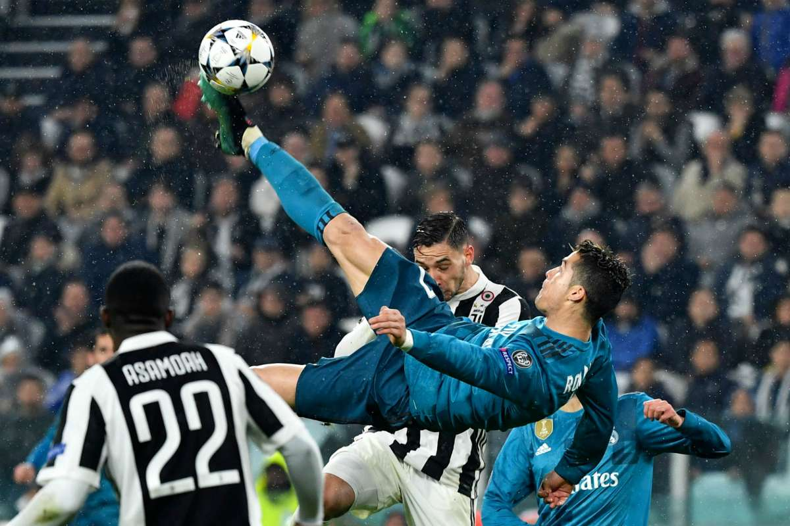
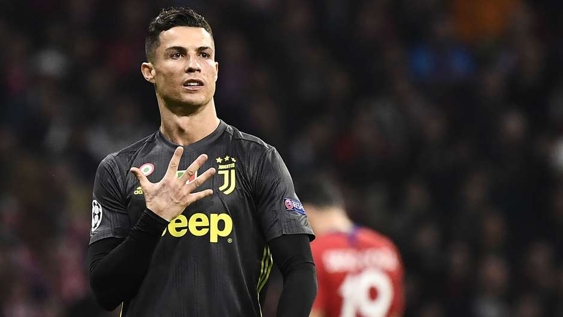
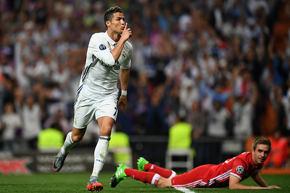
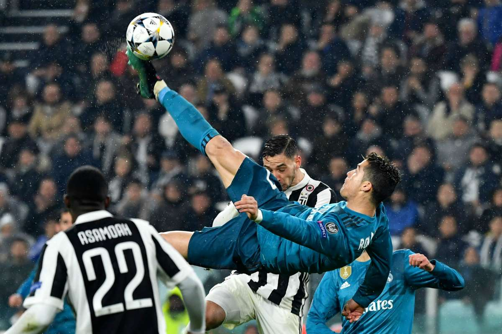
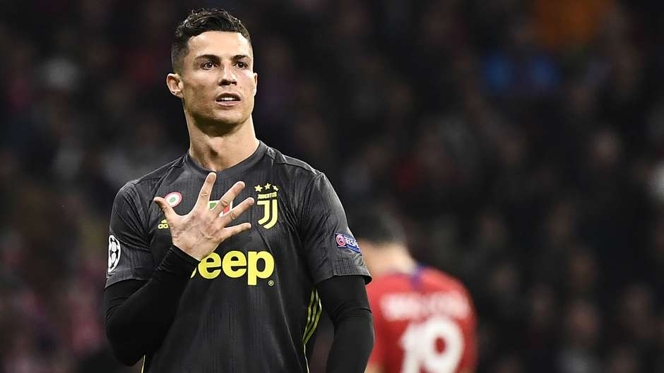
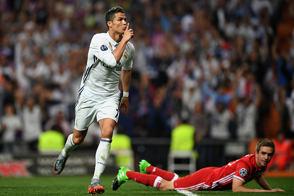

CRISTIANO RONALDO

Quem sou eu ?
Cristiano Ronaldo dos Santos Aveiro é um futebolista português que atua como extremo-esquerdo ou ponta de lança. Atualmente joga pelo Manchester United e pela Seleção Portuguesa.
Como falar comigo?
Jogos importantes
 




